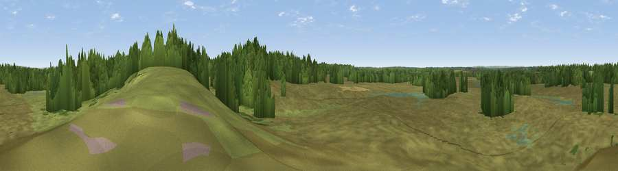

Viewpoint near Dibden
#45180 in England · top 90% of its area beats it · near Dibden · open accessWhere it is
The exact computed spot (SU 39759 06361). Click the marker for map links.
Public access: this spot lies on mapped open-access land (CRoW Act 2000) — you may roam here on foot. Computed from Natural England's CRoW access layer and OpenStreetMap rights of way — not the legal definitive map. Always verify locally.
The view, rendered

A 360° render of this exact spot computed from the terrain model, tree cover and land cover — summer colours, afternoon light, calibrated against photographs of famous viewpoints. Real trees, hedges and buildings will differ in detail.
The panorama
Grey silhouette: terrain skyline in each direction (720 bearings, Earth curvature and refraction included). Dashed green: skyline with trees (+15 m) and buildings (+8 m) as obstacles. Blue strip: how far the ground is visible on each bearing.
Where the view opens
Wedge length = distance to the farthest visible ground on that bearing (vegetation-aware). Rings at 10, 25 and 50 km.
What fills the view
68% grassland · 28% woodland · 2% wetland · 1% built-up ·
Angular shares of the visible panorama (visual magnitude), not map area. Landscape diversity 0.35 (0–1 Shannon).
Key numbers
More beautiful places nearby
The staircase of upgrades: each row has a higher view potential than everything closer. Driving times are estimates from straight-line distance, calibrated against real road routing — check an actual route before setting out.
| Place | Direction | Drive | Score |
|---|---|---|---|
| Windmoor Hill | N · 2 km | ~6 min | 16.6 |
| Viewpoint near Netley | E · 7 km | ~14 min | 25.7 |
| Viewpoint near Langley | SE · 9 km | ~19 min | 38.2 |
| Viewpoint near Langley | SE · 10 km | ~19 min | 38.7 |
| Viewpoint near Gurnard | SSE · 14 km | ~25 min | 45.1 |
| Viewpoint near Porchfield | SSE · 14 km | ~26 min | 45.7 |
| Viewpoint near Porchfield | SSE · 15 km | ~26 min | 54.2 |
| Viewpoint near Cranmore | S · 16 km | ~28 min | 59.2 |
50.85540, -1.43652 · source: osm viewpoint · position refined by local search. Computed location — check access rights before visiting.